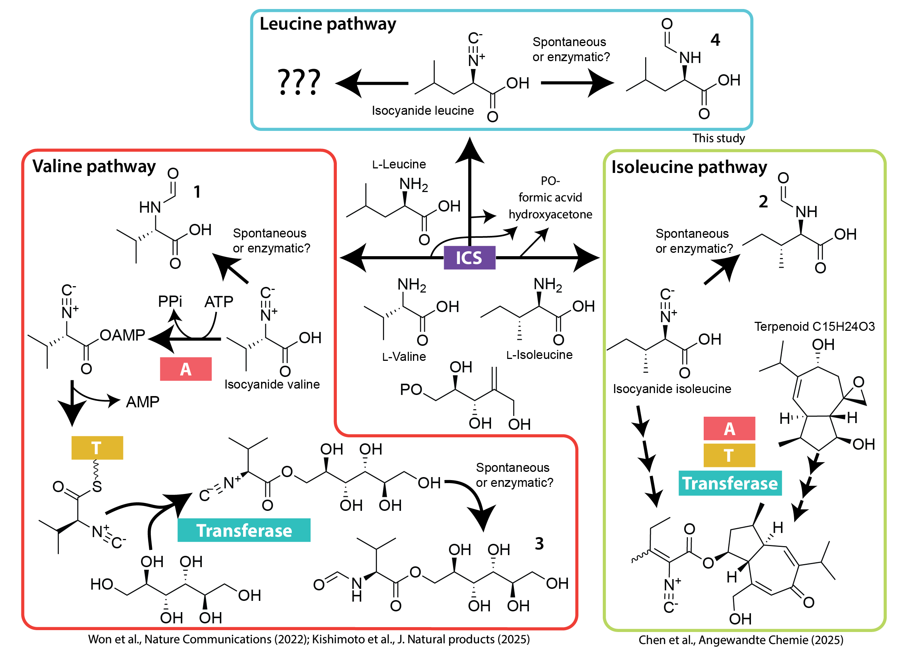
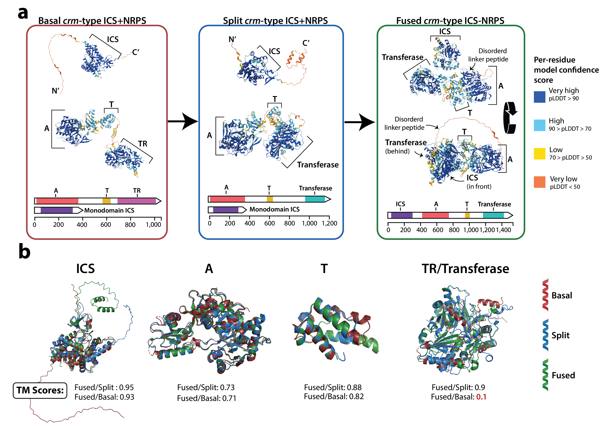

Updated analysis of the crmA metabolic pathway

Fig. 3b from Nickles et al. (2026). Proposed fumicicolin A biosynthetic pathway, based in part on the proposed pinocicolin A pathway from Kishimoto et al. (2025)25 (recreated with permission) in addition to the findings from Chen et al. (2025)26.

Fig. 5 from Nickles et al. (2026). Proposed evolutionary model for the CrmA metabolic pathway, with supporting structural alignments of CrmA domains. (a) Protein structures are colored with the per-residue model confidence score. The evolutionary model depicts three stages. The proposed ancestral 'basal' state, Type C, consists of separate ICS and NRPS-like proteins and notably has a thioester reductase (TR) domain on the C-terminus. The split Type A architecture has a C-terminal transferase and is hypothesized to have evolved from Type C via full replacement of the TR domain for the transferase. Finally, the fused Type A architecture is hypothesized to have arisen via a gene fusion event within an ancestral split Type A lineage. (b) Pairwise structural alignments of individual CrmA domains (ICS, A, T, and the C-terminal TR or Transferase domains). Each domain was extracted from the full-length protein models shown in 'a' and aligned separately. TM-scores, quantifying structural similarity, are provided for each indicated pairwise alignment (e.g., 'fused/split' compares the domain from the fused CrmA with that from the split Type A form). The aligned structures are colored as follows: basal-red; split-blue; fused-green.